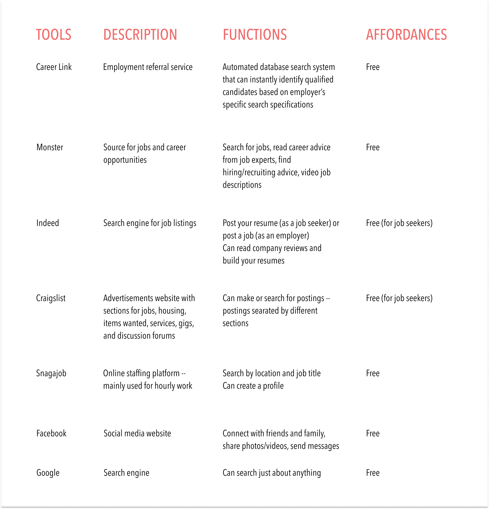
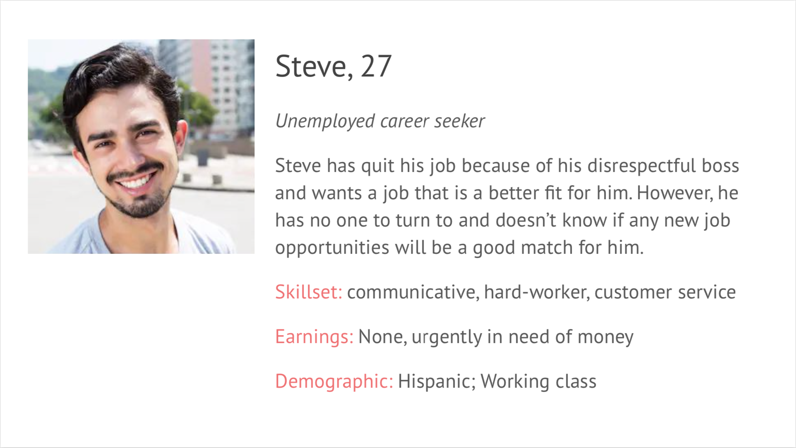
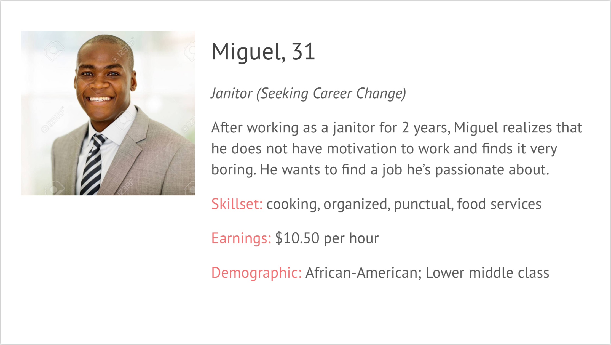
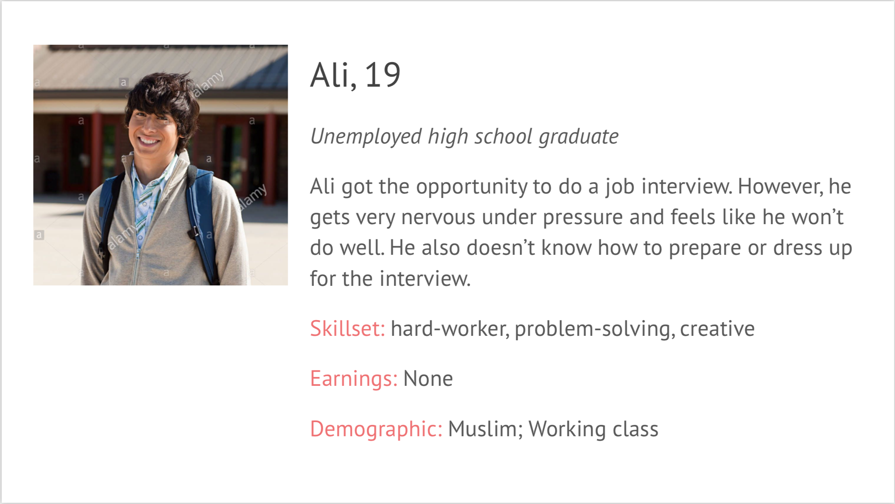
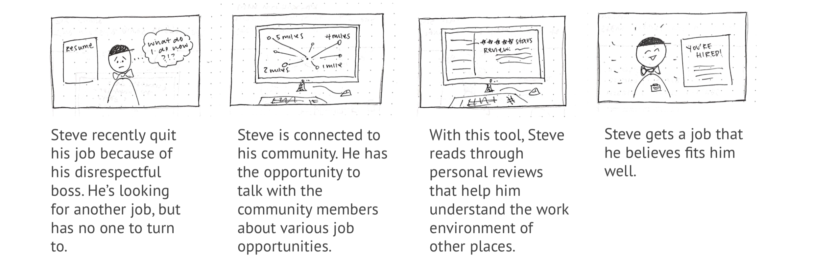
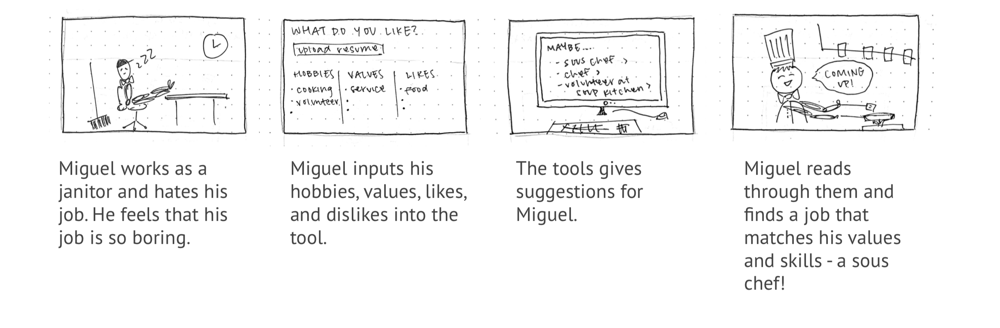
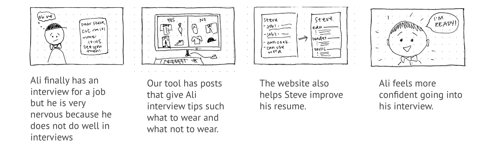
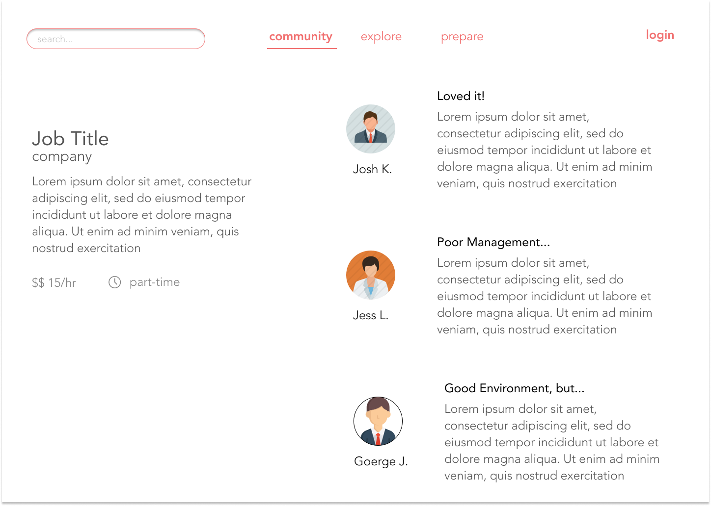

CAREER TRAJECTORIES
As a research assistant within the Human-Computer Interaction Institute, I worked with Professor Maria Tomprou and Dian Lee to design a tool able to help low-resourced populations better manage their careers.
I did background research to produce an appropriate interview protocol, interviewed key stakeholders, analyzed qualitative and quantitative data, and contributed to the designs.

GOALS
We wanted to identify the main pain points that are preventing low-resourced populations from finding their most fit employment. We hope to reduce these barriers by identifying resources that can help them reach self-sufficiency and help this population:
- Find jobs
- Transition into a new career path
- Maintain current job
METHODOLOGY
Sample
Our sample consisted of multiple different populations:
- Career seekers found through attending local job fairs.
- Low-resourced employees within the custodial staff at the Cohon University Center.
- Employers from the Cohon University Center staff.
Procedure
We drafted multiple interview protocols each tailored to each of the populations mentioned above to answer specific questions:
- For low-resourced career seekers How do they approach each career transitional scenario? How has technology, or lack thereof, impacted their job search or performance? How can technology potentially help?
- For employers How do they manage low-resourced workers? How do they get trained? What is the workplace environment like? What do they do to help their employees with their future careers?
RESULTS
Analysis: Tools Used in the Job Search Process
Based on interview responses, I analyzed popular technological resources our sample used during their job search process:

The most widely used tools within our sample were free and online platforms. Given the familiarity and accessibility of these resources, we decided that our tool should be a free online platform as well.
Interview Analysis
We began noting patterns between interviews after consolidating all the quantitative data.

- Large emphasis on social support network and community. 85% of our sample credited their current job to a supportive family member or friend.
- Jobs as a means of financial stability, not genuine enjoyment. Security and likelihood of staying in the same position were rated the same.
- Usability can increase confidence. Many participants expressed that they wish to “just have one website… have it easier to look at all the jobs.” Especially during this tumultuous and confusing time, usability can help decrease frustration.
With both quantitative and qualitative data in mind, we settled on three main features for our online platform. It will:
- Connect users with their community
- Help users find meaningfulness in their career
- Increase user confidence by promoting marketability
Personas
We created three personas and storyboards to depict the main features of the website.



Storyboarding
Connecting to the Community: This feature provides individuals with a virtual support system.

Finding Meaningfulness: This feature continuously encourages individuals to find their true passion - something that really excites them!

Promoting Marketability: Our tool will also help individuals feel more prepared and confident going into this uncertain period in their career paths.

SOLUTION
This research led to the beginning stages of prototyping our solution. I focused on the community feature:




DESIGN CONSIDERATIONS
- The network effect: How can design encourage users to have constant and open comunication? How can that translate to more website traffic?
- How can the design of this feature simulate a user's personal support system?
- Not everyone may have the same access to transportation - how can the map take this into consideration?
- Create a flow between the three features that is easy to understand
PERSONAL TAKEAWAYS
- This research opportunity challenged me to break personal biases that had previously shaped my outlook on those whose socioeconomic status differed from mine.
- You don't know anything about the users! I caught myself making small assumptions throughout the process presuming to know about this population. For example, the initial draft of my interview protocol didn't even consider that job seekers may not have a resume prepared.